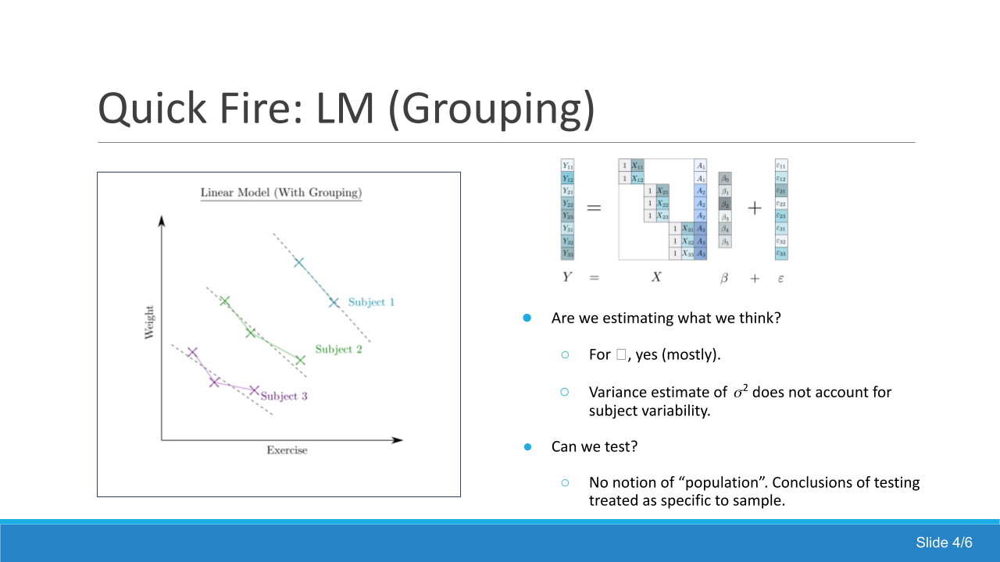
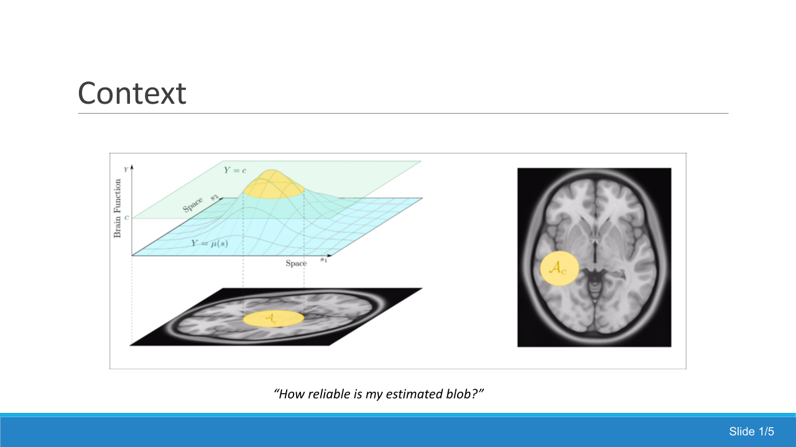
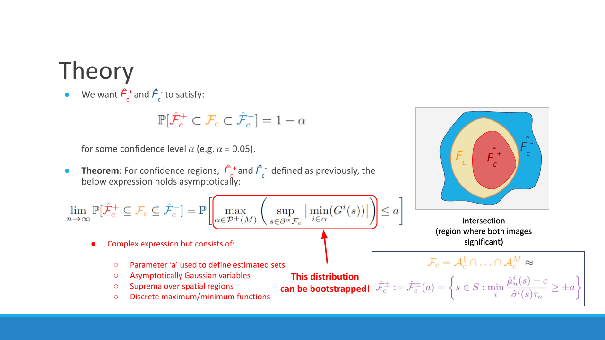
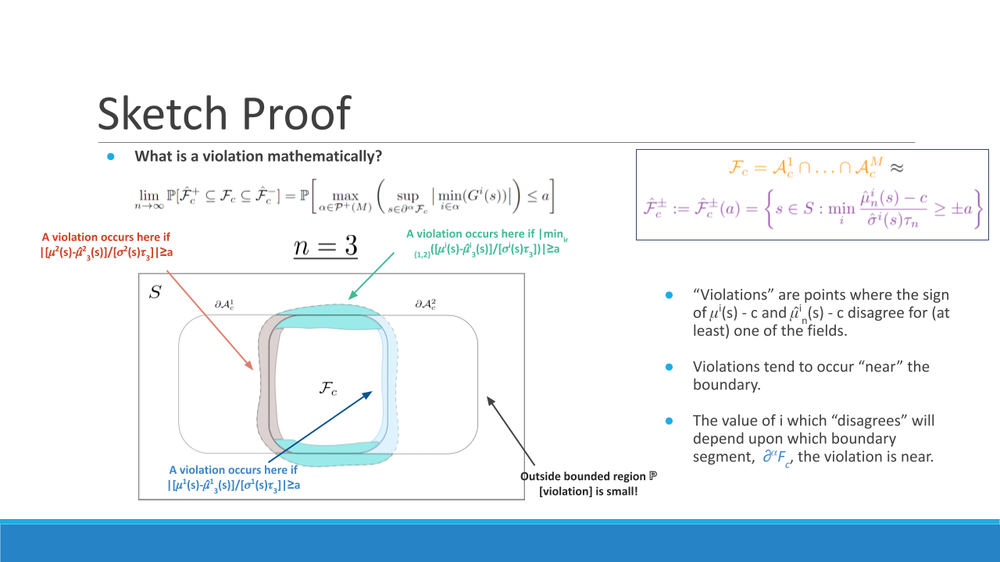
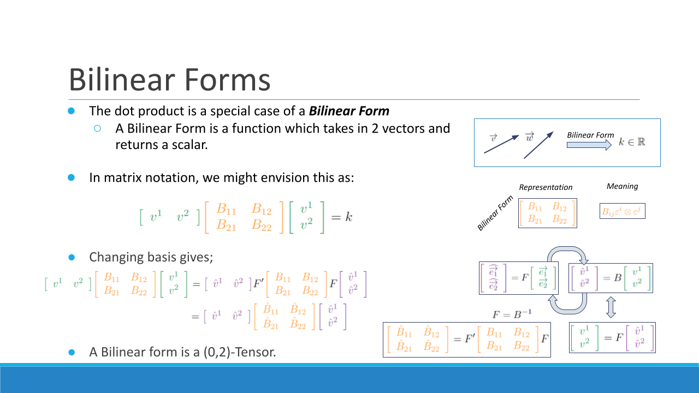
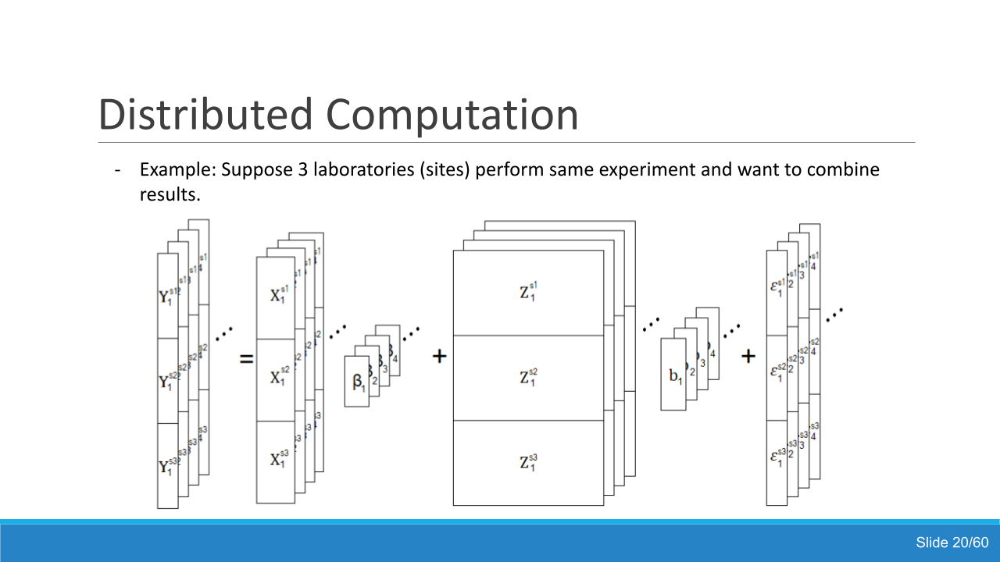
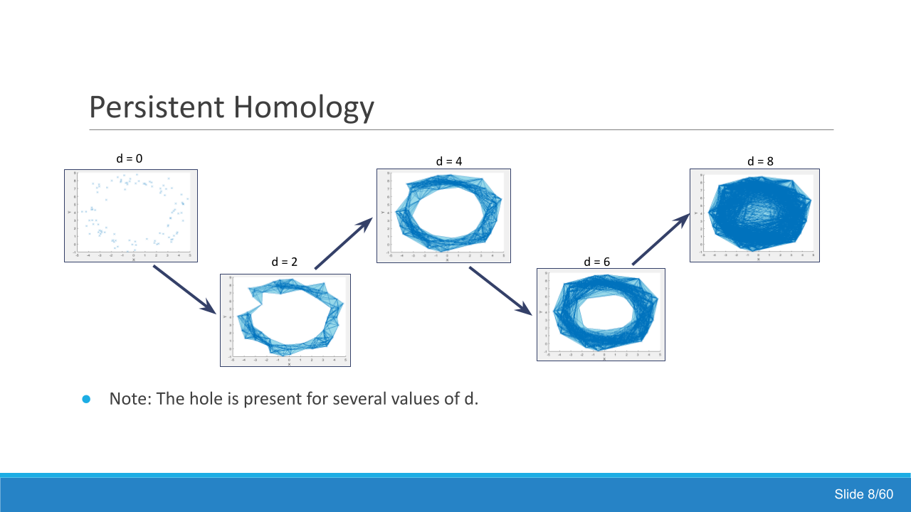
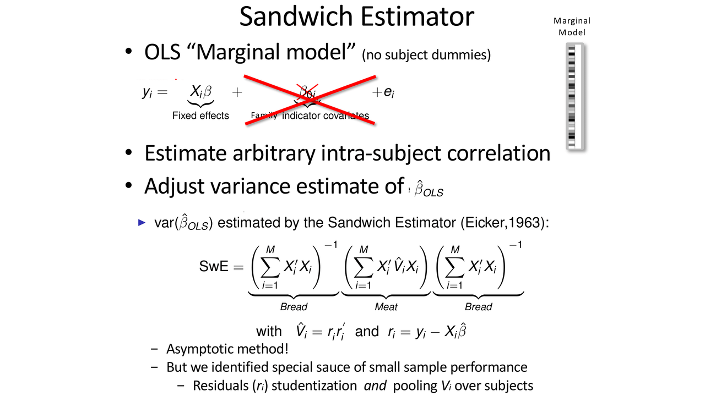
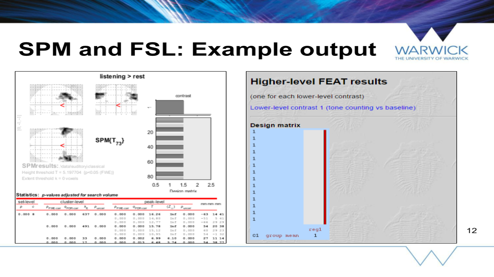
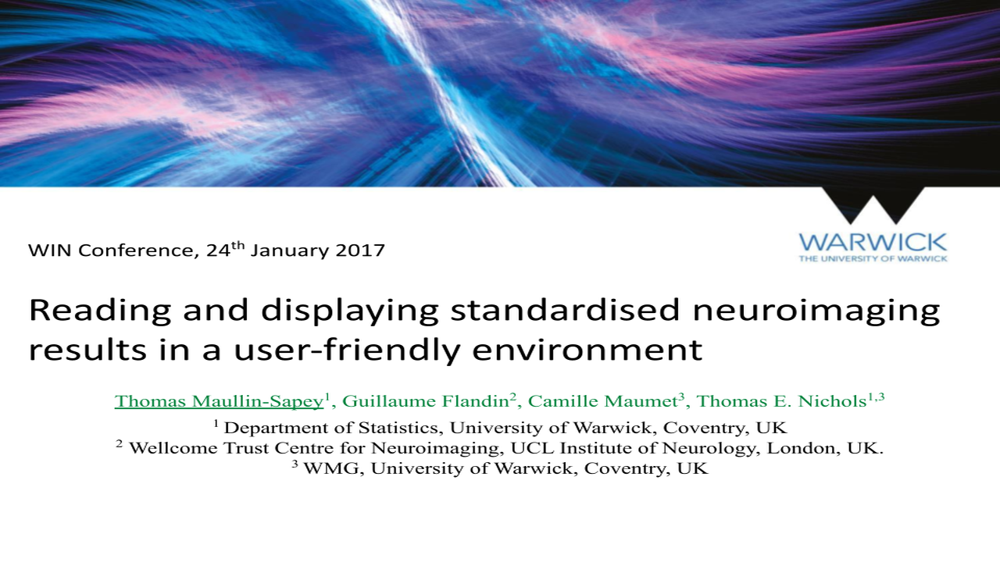

BLMM: A toolbox for parameter estimation and inference on big linear mixed models on NeuroImaging data
Maullin-Sapey, T. (2022). University of California Spatial Statistics Reading Group.
This talk is about BLMM, a Python toolbox for parameter estimation and inference on big linear mixed models on NeuroImaging data. It was originally presented for the university of California spatial s... (see more)
(Press ESC to Exit)
(Tap Away to Exit)

Rapid Fire Introduction to Spatial Confidence Regions
Maullin-Sapey, T. (2022). Royal Statistical Society Rapid Fire Sessions.
This rapid-fire talk aims to provide an introduction to spatial confidence regions. It was first presented at the Royal Statistical Society (RSS) rapid-fire session held on September 13th, 2022.... (see more)
(Press ESC to Exit)
(Tap Away to Exit)

Spatial Confidence Regions for Combinations of Excursion Sets in Image Analysis
Maullin-Sapey, T. (2022). FMRIb Reading Group.
This talk was about spatial confidence regions for combinations of excursion sets in image analysis, with an application to fMRI data. It was originally presented at the FMRIb Reading Group on June 6t... (see more)
(Press ESC to Exit)
(Tap Away to Exit)

Spatial Confidence Regions Methods and Proof
Maullin-Sapey, T. (2022). University of California Spatial Statistics Reading Group.
This talk was given on spatial confidence regions at the university of California spatial statistics reading group on June 2nd, 2022. In this talk, theory is emphasized over application.... (see more)
(Press ESC to Exit)
(Tap Away to Exit)

Tensors: What is a Tensor? (And why learn about them?)
Maullin-Sapey, T. (2022). NISOx Reading Group.
This talk served as an introductory overview of tensors, focusing on what they are and why they are worth learning about. The intended audience was applied statisticians, and the talk was presented at... (see more)
(Press ESC to Exit)
(Tap Away to Exit)

BLMM: A framework for distributed computation of big linear mixed models on NeuroImaging data
Maullin-Sapey, T. (2020). FMRIb Reading Group.
This talk was given on BLMM, a framework for distributed computation of big linear mixed models on NeuroImaging data, and was presented at the FMRIb Reading Group on February 25th, 2020.... (see more)
(Press ESC to Exit)
(Tap Away to Exit)

Persistent Homology: Introduction and examples
Maullin-Sapey, T. (2019). NISOx Reading Group.
This talk served as an introduction to the subject of persistent homology. Throughout the talk, several examples of the use of persistent homology are given and particular emphasis is placed on the pa... (see more)
(Press ESC to Exit)
(Tap Away to Exit)

SwE-Toolbox: Fast and accurate modelling of longitudinal neuroimaging data
Nichols, T., Guillaume, B. and Maullin-Sapey, T. (2018). University of Oxford.
This talk was given on the SwE-Toolbox; a tool for fast and accurate modelling of longitudinal neuroimaging data. The slides were first presented at the university of Oxford on June 29th, 2018.... (see more)
(Press ESC to Exit)
(Tap Away to Exit)

Visualisation and Integration of Multiple Brain Imaging Studies
Maullin-Sapey, T. (2017). Warwick Neuroimaging Statistics Research Reading Group.
This talk was given on the image-based meta-analysis (IBMA) toolbox; an extension of SPM designed to synthesize the results of multiple studies and detect publication bias in results. This presentatio... (see more)
(Press ESC to Exit)
(Tap Away to Exit)

Reading and displaying standardised neuroimaging results in a user-friendly environment
Maullin-Sapey, T., Flandin, G., Maumet, C. and Nichols, T.E. (2017). WIN Conference.
This talk was given on NIDM-results; a standardised, machine-readable, format for sharing and displaying neuroimaging results. It was presented at the University of Warwick's "WIN" conference on Janua... (see more)
(Press ESC to Exit)
(Tap Away to Exit)